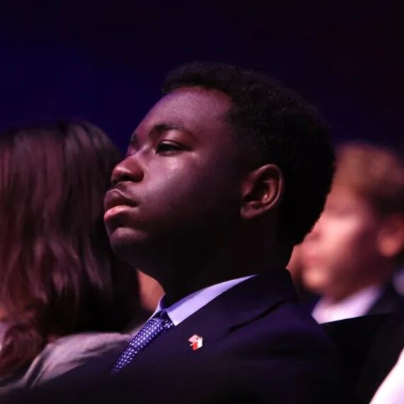

Summary
I am Selinam Asuo, a Drexel student majoring in Computer Engineering and minoring in User Experience and Interaction Design (UXID). I am currently in my second year and have an interest in graphic design, web development, and user experience design, alongside my major's foci in creating and maintaining computer software and hardware systems. I am also a huge fan of the Zelda series if you can't tell!
My initial interest started with video games and DIY computers. One of my highschool graphic design classes forced me to download Adobe Illustrator on my old Dell Optiplex desktop that did not have a dedicated GPU. This made it impossible to work on projects outside of school hours. Through lots of reasearch, I was able to find an AMD Radeon RX 6400 GPU that could power the system without overloading it. I later put in some more research to find my current ASUS laptop with 16 gigabytes of memory, a Ryzen 7800HS CPU, and an Nvidia GeForce RTX 3060 Laptop GPU. This new ASUS laptop allowed me to complete my academic work in roughly half the time as my old desktop while also allowing me to play games in my free time. That journey from barely knowing anything about desktops to being somewhat knowledgeable in computer hardware and laptops is something that I will never take for granted, and that I have been able to apply to many areas of my life.
Outside of my academic interests, I enjoy playing video games like Zelda and Super Smash Bros, as well as baking, cooking, and going out to explore the city of Philadelphia with my friends. My favorite games are Ocarina of Time and Breath of the Wild, and my favorite thing to bake is brownies! I make posters, videos, and other graphic design work for my friends, family, personal projects, and both high school and college organizations.
Projects
Here are some of my projects I have worked on:
An Untitled Action-Adventure RPG
January 2026 - June 2026
Led design, development, documentation, and coordination of a 2D action-adventure prototype in GODOT by translating written and verbal concepts to tile-based environments. Built modular layout and level-based collision systems, iterating on dungeon design from user feedback to include pacing and clarity.
Watch the Final DemoCarver FIRST Robotics Brand Overhaul Proposal
June 2025 - September 2025
A Canva-based brand overhaul/product design side project I did for my highschool robotics team after I graduated. I was on one of their FIRST Tech Challenge (FTC) teams up until I graduated, and I was part of the planning process for the FIRST Robotics Competition (FRC) team that they planned to start up after my senior year. I am also a mentor of said FRC team. One idea that we had was to use Fouthwall, a product-on-demand (POD) service, for merch to prevent overspending, breaking even, or losing money on merch like we had done in years prior. I checked out some of the sticker sheets on their page, and proceeded to make this product design slideshow from there.
View the Brand Overhaul Proposal Check out the FRC team on Instagram
The Torun Experience
September 2024 - October 2024
My school organized a Polish Student Exchange program in my junior and senior years of highschool for an Model United Nations abroad. I was part of the first cohort of students to participate in this program at my highschool. I documented my experience through pictures and an edited video and posted it online. I also spoke about my experience in the Mayor's Office of Philadelphia City Hall!
Watch the VideoWatch the CBS News Coverage
The Legend of Zelda: Ocarina of Time Memory Game
January 2023 - March 2023
This is a memory game that I created in highschool using Snap! by University of California, Berkeley. The game is based on the popular video game The Legend of Zelda: Ocarina of Time. The player uses a virtual ocarina to play and match songs that have randomly generated patterns, or songs directly from the game!
Play the Game